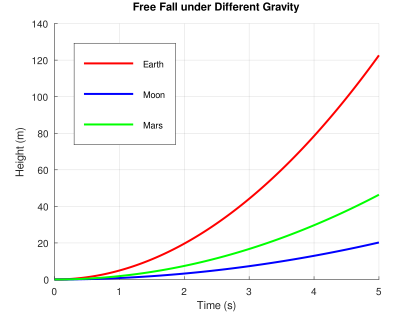

Octave使用FAQ
Octave简介
Octave 是一个以矩阵与数值计算为核心的科学计算工具，语法与 MATLAB 高度兼容，免费、开源、跨平台。在物理模拟开发中，可以先通过Octave进行物理公式的数值验证，然后在把算法写成C++。下面这个图描述了Octave在物理模拟开发中所处的位置：
物理公式 / 推导
↓
Octave：数值验证 / 行为观察
↓
C++ / UE / 引擎实现
↓
Demo 场景验证
Octave使用原则
- 一个脚本，只验证一个问题。
- 变量名与C++一致。
- 使用Octave验证引擎代码原理。
Octave在VS Code中配置方法
-
安装Octave，下载地址：https://www.gnu.org/software/octave/。
-
确认命令可用。
octave --version
确保环境变量添加到PATH中
C:\Program Files\GNU Octave\Octave-10.3.0\mingw64\bin
-
在Vscode商店中，添加插件Octave, Octave Language和Octave Debugger.
-
新建测试项目test.m，绘制不同的加速度的自由落体运行曲线，并显示保存成svg格式图片。
%% test.m
% 绘制不同重力加速度下的自由落体曲线，并保存为 SVG 文件
clc; clear; close all;
% -------------------------
% 配置参数
% -------------------------
g_list = [9.81, 1.62, 3.71]; % 地球、月球、火星 (m/s^2)
labels = {'Earth', 'Moon', 'Mars'};
t_max = 5; % 模拟时间 (秒)
dt = 0.01; % 时间步长
% -------------------------
% 生成时间序列
% -------------------------
t = 0:dt:t_max;
% -------------------------
% 绘制曲线
% -------------------------
figure;
hold on;
colors = ['r', 'b', 'g'];
for i = 1:length(g_list)
g = g_list(i);
y = 0.5 * g * t.^2; % 自由落体公式
plot(t, y, 'Color', colors(i), 'LineWidth', 2);
end
% -------------------------
% 图形美化
% -------------------------
xlabel('Time (s)');
ylabel('Height (m)');
title('Free Fall under Different Gravity');
legend(labels, 'Location', 'northwest');
grid on;
% -------------------------
% 保存为 SVG 文件
% -------------------------
svg_filename = fullfile(pwd, 'free_fall.svg'); % 保存到当前目录
print(svg_filename, '-dsvg');
fprintf('SVG saved to %s\n', svg_filename);
% -------------------------
% 保持窗口
% -------------------------
pause; % 阻塞，防止 CLI 下图像闪退

Octave常见命令总结
整理一份实用清单，分为 矩阵操作 / 数值计算 / 绘图 / 辅助命令，并结合物理模拟场景说明。
矩阵和数组操作
| 命令 | 说明 | 示例 |
|---|---|---|
zeros(n,m) | 创建 n×m 的零矩阵 | M = zeros(3,3); |
ones(n,m) | 创建全 1 矩阵 | v = ones(3,1); |
eye(n) | 单位矩阵 | I = eye(3); |
size(A) | 返回矩阵尺寸 | [r,c] = size(M); |
length(v) | 向量长度 | n = length(v); |
A' | 转置矩阵 | vT = v'; |
inv(A) | 矩阵求逆 | M_inv = inv(M); |
det(A) | 行列式 | d = det(M); |
diag(v) | 对角矩阵 / 提取对角 | D = diag([1 2 3]); |
sum(A) | 矩阵列求和 | s = sum(F); |
prod(A) | 矩阵列求积 | p = prod(v); |
数值计算和函数操作
| 命令 | 说明 | 示例 |
|---|---|---|
linspace(a,b,n) | 创建 n 个等间距点 | t = linspace(0,5,100); |
: (冒号运算符) | 等步长向量 | t = 0:0.01:5; |
sqrt(x) | 开平方 | v = sqrt(2*g*h); |
abs(x) | 绝对值 | v = abs(v); |
sum, mean, max, min | 常用统计 | v_mean = mean(v); |
norm(v) | 向量范数 | v_len = norm(v); |
dot(a,b) | 点积 | d = dot(F,r); |
cross(a,b) | 叉积 | c = cross(r, F); |
eig(A) | 特征值 | [V,D] = eig(M); |
inv(A)、pinv(A) | 矩阵逆 / 伪逆 | J_pinv = pinv(J); |
rand, randn | 随机数生成 | noise = randn(3,1); |
绘图和可视化
| 命令 | 说明 | 示例 |
|---|---|---|
plot(x,y) | 绘制二维曲线 | plot(t,y); |
plot3(x,y,z) | 三维曲线 | plot3(X,Y,Z); |
figure | 新建图形窗口 | figure; plot(t,y); |
hold on/off | 保持多条曲线 | hold on; plot(t2,y2); |
xlabel('text')、ylabel('text')、zlabel('text') | 坐标轴标签 | xlabel('Time (s)'); |
title('text') | 图形标题 | title('Free Fall'); |
legend({'a','b'}) | 图例 | legend({'Earth','Moon'}); |
grid on/off | 网格显示 | grid on; |
axis([xmin xmax ymin ymax]) | 设置坐标轴 | axis([0 5 0 50]); |
pause(t) | 阻塞显示 | pause; 用于 CLI 绘图防止闪退 |
saveas(gcf,'file.svg') | 保存图像 | saveas(gcf,'freefall.svg'); |
print('file.svg','-dsvg') | 推荐保存 SVG | print('freefall.svg','-dsvg'); |
文本和脚本操作
| 命令 | 说明 | 示例 |
|---|---|---|
load('file.mat') | 加载数据 | load('simulation.mat'); |
save('file.mat','var1','var2') | 保存数据 | save('results.mat','t','y'); |
run('script.m') | 执行脚本 | run('Box.m'); |
edit script.m | 打开编辑器 | edit test.m; |
控制流程
| 命令 | 说明 | 示例 |
|---|---|---|
for i = 1:N ... end | 循环 | for i=1:100; y(i)=0.5*g*t(i)^2; end |
while condition ... end | 循环 | while norm(F)>1e-5; ... end |
if ... elseif ... else ... end | 条件 | if x>0 ... else ... end |
break | 退出循环 | if t>5, break; end |
continue | 跳过本次循环 | if y<0, continue; end |
线性代数求解
| 命令 | 说明 | 示例 |
|---|---|---|
A\b | 解线性方程组 | v = M\F; |
pinv(A)*b | 伪逆求解 | v = pinv(J)*C; |
eig(A) | 特征值分析 | [V,D] = eig(M); |
svd(A) | 奇异值分解 | [U,S,V] = svd(J); |
调整辅助命令
| 命令 | 说明 |
|---|---|
disp(var) | 打印变量 |
fprintf(...) | 格式化输出 |
keyboard | 暂停执行进入命令行（类似断点） |
who / whos | 查看当前变量 |